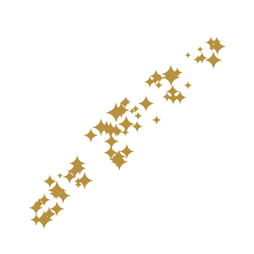

Astrology Grimoire
Milky Way
Not every culture pictures our galaxy in milky terms, though most do, from the Via Lactea to the Darb al Labana, the Melkweg, and la Voie Lactee. The number of stars it holds is, quite literally, astronomical, somewhere between 200 and 400 billion. This is our home galaxy, and on a night dark enough to escape the glow of artificial light, what we glimpse is the edge-on slice of a sparkling, spiral river of stars.
Such an inheritance has stirred the imagination for millennia and given rise to many lyrical tales. Many North American peoples saw it as the path lighting the way to the next world. The Finns, Lapps, and Estonians were among those who read it as a road for the birds on their journeys carrying messages between the gods and humankind, and in a satisfying turn, scientists have lately found that migratory birds may indeed steer by the Milky Way. The Samoyed peoples called it the spine of the sky. A favorite image among the ancient Greeks and Egyptians described it as milk spilled from the udders of the celestial cow, Hera for the Greeks and Hathor or Isis for the Egyptians. In the Hindu Bhagavata Purana the stars are likened to a vast celestial dolphin swimming through the Heavens, with the Milky Way as its belly, and its Sanskrit name translates as the Ganges of the sky. For the Spanish it is the Camino de Santiago, since pilgrims bound for Santiago de Compostela in the northwest used it as a guide, and in a lovely turn of as above, so below, the earthly pilgrims' road itself was once called the Milky Way.